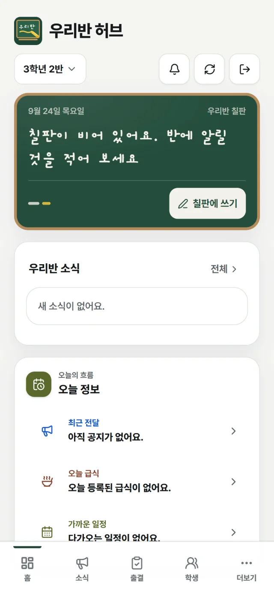
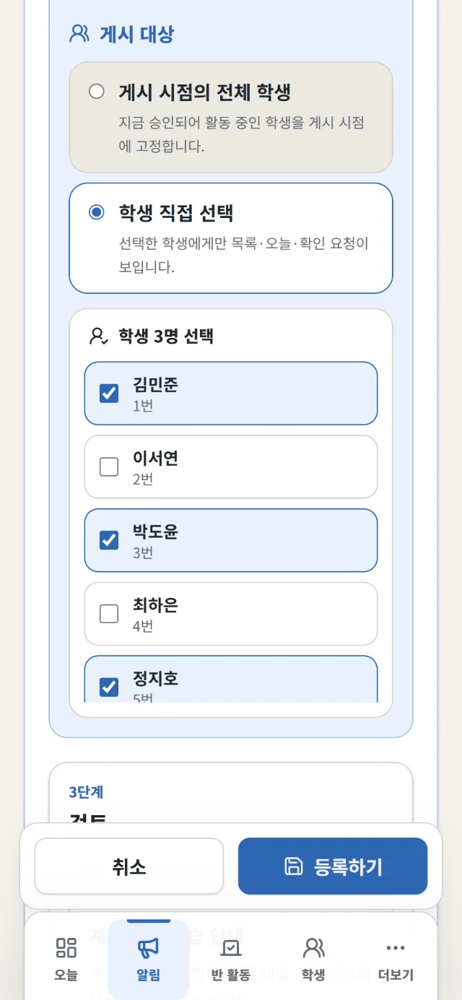
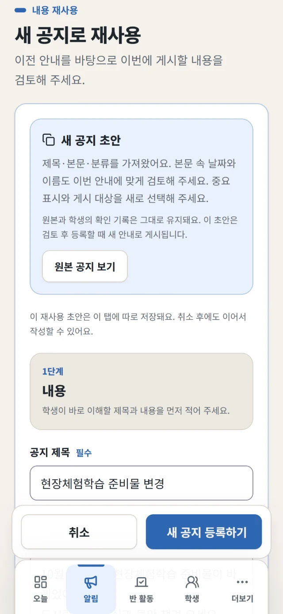
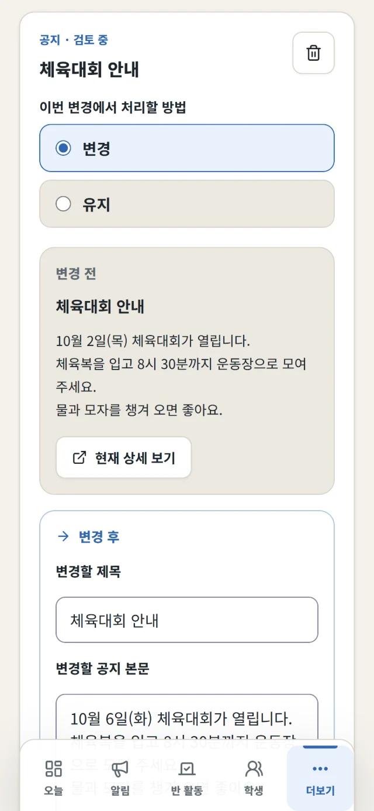

1아침
공지를 올리면 학생 화면 맨 위에 나와요.
- 선생님
체육대회 공지를 올려요. 반 전체나 원하는 학생에게만 보낼 수 있어요.
- 학생
홈 맨 위에서 공지를 읽고 '공지 확인하기'를 눌러요.
- 알림
지원 기기에서 홈 화면에 추가하고 알림을 허용하면 알림을 받아요. 수업 시간과 밤에는 알림을 바로 보내지 않고, 나중에 모아서 보내요.
학생 화면 맨 위에 아직 보지 않은 공지가 나와요.
공지를 고치면 이미 확인한 학생도 바뀐 내용을 다시 확인해요.
전화번호를 받지 않아요. 궁금한 점은 '도움 요청' 버튼으로 선생님께 보내요.
시작 방법
학교와 학년·반을 고르면 초대 코드가 생겨요.
학생은 휴대폰으로 QR 코드를 찍거나 초대 코드를 입력해 참여를 요청해요.
학생 번호와 이름을 정하고 '모두 승인' 버튼으로 한꺼번에 승인해요.
공지를 올리면 누가 확인했는지 바로 보여요.



칠판이 비어 있으면 선생님 홈의 우리반 칠판에 '칠판에 쓰기' 버튼이 나와요. 누르면 바로 첫 공지를 쓸 수 있어요. 학생 칠판에는 각자 아직 안 본 것만 보여요.
사용 예시
체육대회 안내 공지를 올린 날, 선생님과 학생이 하는 일을 시간 순서로 보여 드려요.
1아침
체육대회 공지를 올려요. 반 전체나 원하는 학생에게만 보낼 수 있어요.
홈 맨 위에서 공지를 읽고 '공지 확인하기'를 눌러요.
지원 기기에서 홈 화면에 추가하고 알림을 허용하면 알림을 받아요. 수업 시간과 밤에는 알림을 바로 보내지 않고, 나중에 모아서 보내요.

2점심 · 오후
확인한 학생과 아직 확인하지 않은 학생이 나뉘어 보여요.
오후에 공지를 고치면 이미 확인한 학생도 다시 확인해요. 몇 명이 새 내용을 봤는지도 보여요.
아직 확인하지 않은 학생에게만 앱 안에서 다시 알려요.

3방과 후
'준비하기 어려워요'를 누르고 "집에 물감이 없어요"처럼 짧게 적어요.
한 줄로 답하고 '처리 완료'를 누르면 학생 화면에 보여요.
'학생별 미해결 모아보기'에서 아직 확인하지 않은 학생을 한 번에 봐요.
화면 속 이름과 날짜는 예시예요.
비교
| 항목 | 단체 대화방 | |
|---|---|---|
| 공지 위치 | 새 대화가 올라오면 찾기 어려워요. | 아직 보지 않은 공지가 맨 위에 있어요. |
| 누가 확인했는지 | 알기 어려워요. | 확인한 학생과 확인하지 않은 학생이 나뉘어 보여요. |
| 내용을 고치면 | 다시 봤는지 알 수 없어요. | 다시 확인을 받고, 확인한 학생 수를 보여 줘요. |
| 확인하지 않은 학생 챙기기 | 한 명씩 찾아야 해요. | 확인하지 않은 학생에게만 다시 알려요. |
| 질문·어려움 | 모두가 보는 대화방에 질문을 올려요. | 버튼으로 선생님께만 보내요. |
| 연락처·대화 | 학생 모두가 같은 대화방에 있어요. | 전화번호를 받지 않고, 학생끼리 대화하지 않아요. |
우리반 허브에는 대화 기능이 없어요. 공지를 전하고 확인하는 데에만 써요.
기능
기능을 네 가지로 나눠 실제 화면과 함께 보여 드려요.
공지·준비물·숙제·일정을 한곳에서 올려요.



누가 확인했는지 보고, 아직 확인하지 않은 학생을 챙겨요.

학생 화면에는 오늘 할 일과 놓친 안내가 먼저 나와요.


학생 승인부터 학년 말 마무리까지 선생님이 관리해요.


개인정보와 안전
코드를 알아도 승인 전에는 반 자료를 볼 수 없어요.
이메일로 가입하고, 승인 화면에서도 이메일 일부는 가려져요. 학생끼리 대화하는 기능은 없어요.
공개 체험은 만 14세 이상, 학생은 중학교 3학년 이상을 대상으로 해요.
앱의 개인정보 안내는 개발본이에요. 실제 학급 운영에 앞서 확정·게시할 예정이며, 지금은 예시 정보로 체험해 주세요.
선생님이 학생을 반에서 뺄 수 있고, 반을 관리한 기록도 남아요.
설정에서 계정 삭제를 요청할 수 있어요. 실제 학생의 자료를 보관하는 용도로는 아직 사용하지 마세요.
공개 체험 이용 안내
우리반 허브는 개발 중이에요. 먼저 화면과 기능을 써 보고, 불편한 점이나 의견을 알려 주세요.
실제 학급 운영을 시작하기 전의 체험판이에요. 학생의 실제 이름·연락처·상담 내용 등 개인정보 대신 예시 정보를 사용해 주세요.
아니요. 인터넷 창(크롬·사파리)으로 열면 돼요. 알림을 받으려면 지원 기기에서 홈 화면에 추가하고 알림을 허용해 주세요.
'우리반 허브 열기'를 누르면 최신 앱 주소로 이동해요. 회원가입·이메일 인증 후 로그인해 주세요. 교사 기능은 별도 운영자 승인이 필요하므로 가입 후 메일로 문의해 주세요. 실제 학생 개인정보 대신 예시 정보로 체험해 주세요.
공개 체험도 만 14세 이상, 학생은 중학교 3학년 이상을 대상으로 해요.
괜찮아요. 선생님이 승인해야 들어올 수 있어요. 코드는 기한이 있고, 새로 만들 수도 있어요.
점검·재시작 중에는 잠시 접속이 끊길 수 있어요. 예전에 저장한 앱 주소 대신 이 소개 페이지의 앱 열기 버튼으로 다시 시도해 주세요. 새 주소가 반영되기까지 몇 분 걸릴 수 있어요. 계속 열리지 않으면 메일로 알려 주세요.
대화방에서는 누가 봤는지, 고친 내용을 다시 봤는지 알기 어려워요. 우리반 허브는 확인한 학생과 확인하지 않은 학생을 보여 주고, 고치면 다시 확인받아요.
네. 반 전체나 원하는 학생에게만 보낼 수 있어요.
네. 예전 공지·숙제를 불러와 고쳐서 올리면 돼요. 마감일·중요 표시·받을 학생은 새로 골라요.
아니요. 일정을 고치면 연결되어 있던 공지·준비물을 한 화면에 모아 줘요. '변경'이나 '유지'만 고르면 한꺼번에 반영돼요.
네. 아직 확인하지 않은 학생에게만 앱 안에서 다시 알려요. 학생마다 무엇을 아직 확인하지 않았는지는 '학생별 미해결 모아보기'에서 한 번에 볼 수 있어요.
아니요. '질문 있어요'나 '준비하기 어려워요'를 누르고 짧게 적어 보내면 선생님만 봐요. 선생님은 한 줄로 답해요.
수업 시간과 밤에는 알림을 바로 보내지 않고, 나중에 모아서 보내요. 같은 공지에 대한 알림은 하나로 합쳐서 보내요.
아니요. 이메일로 가입해요. 전화번호는 받지 않고, 학생끼리 대화하는 기능도 없어요.
아직은 아니에요. 지금은 선생님·학생 화면만 있어요.
반 운영을 끝내거나 설정에서 계정 삭제를 요청할 수 있어요. 지금은 개발 중인 공개 체험 단계이므로 실제 학생 자료는 입력하지 마세요. 학급 자료 내보내기 기능은 제공하지 않아요.
함께 쓰는 교실 도구
 교실 발표자 뽑기 · Windows용 무료 프로그램
뽑기 시간
설치·인터넷·학생 이름 없이, 번호로 발표자를 뽑아요.
뽑기 시간 보러 가기
교실 발표자 뽑기 · Windows용 무료 프로그램
뽑기 시간
설치·인터넷·학생 이름 없이, 번호로 발표자를 뽑아요.
뽑기 시간 보러 가기